Audible TTS
Introduction
Audible TTS converts text to speech using the synthesizer and voices installed on your device. Allows read: texts sent by other applications (FeedMe, K9-Mail, …), clipboard text, text files and text typed by the user.
It can also read mixed texts (written in several languages), using the right voice for each sentence, depending on the language it’s written. Recognizes 13 languages: German, English, Spanish, French, Italian, Dutch, Portuguese, Turkish, Russian, Arabic, Korean, Chinese and Japanese.
Videos 
You can watch sample videos in the following links:
Privacy
Audible TTS do not request, nor sends any user information except which is sent by the AdMob banner, language and screen size, necessary and essential for correct operation.
Actions
Desktop icon that can be used to launch the application. When it is launched from the desktop, the application remembers the last text used.
This icon appears only when the device has installed no speech synthesizer. Press it to install one or continue reading the section Install voice synthesizer
 Start reading the text that is loaded. This may
run automatically when the auto option is activated
and the “auto->Play” is checked, in any of the
following cases:
Start reading the text that is loaded. This may
run automatically when the auto option is activated
and the “auto->Play” is checked, in any of the
following cases:
- The application has been launched from another application.
- A file has been loaded with the load option.
 It pauses the current reading and awaits. It can be activated automatically when the volume reaches zero.
It pauses the current reading and awaits. It can be activated automatically when the volume reaches zero.
Continue reading, at the beginning of de paused phrase. It can be activated automatically when the volume is no longer zero.
 Moves the reading to the next sentence or paragraph, based on whether
option avanze phrases is checked or not.
Moves the reading to the next sentence or paragraph, based on whether
option avanze phrases is checked or not.
 Moves the reading to the previous sentence or paragraph, based on whether option avanze phrases is checked or not.
Moves the reading to the previous sentence or paragraph, based on whether option avanze phrases is checked or not.
 Option not yet implemented, queues the current text.
Option not yet implemented, queues the current text.
 Shows the configuration screen of the application.
Shows the configuration screen of the application.
Quick Setup
 Whether the auto category options should be automatically performed.
Whether the auto category options should be automatically performed.
Whether to go forward / backward sentences or paragraphs by pressing the buttons next and back.
 Whether perform the reading in the detected language or in the default language.
Whether perform the reading in the detected language or in the default language.
Indica si se muestra o no los controles de volumen.
 Not yext implemented, whether to advance to the next article in queue.
Not yext implemented, whether to advance to the next article in queue.
Whether to show a button bar with extra options for (Copy, Paste and clean clipboard, Editing text, Load a text file and send text to another application.
Volume Controls
Increase volume in an unit, that may represent different percentages by each device.
 Decrease volume in an unit, that may represent different percentages by each device.
Decrease volume in an unit, that may represent different percentages by each device.
Volume Bar, shows volume and let you chage the volume.
Extra Controls
Send current text to another applition (e-mail, SMS, …)
 Loads a text file from MicroSD card or any other place accessible by the installed file browsers.
Loads a text file from MicroSD card or any other place accessible by the installed file browsers.
 Opens an editor with the current text.
Opens an editor with the current text.
Delete clipboard content.
 Changes the current text by the clipboard content.
Changes the current text by the clipboard content.
 Copy current text to clipboard.
Copy current text to clipboard.
Progress Bar
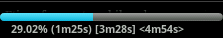
The progress bar shows: elapsed time, estimated remaining time and estimated total tilme. The estimation is just a not very accurate approximation (due to the variability imposed by the synthetizer, the language and the voice selected) but it gives you a good idea of the remaining and total time. The progress bar is show depending on the configuration selected in settings screen.
Main Menu
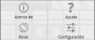
The main menu has four options:
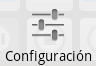 Shows the settings screen.
 Shows this help, can be accessed offline.
Shows this help, can be accessed offline.
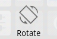 Rotate the main screen.
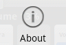 Shows About screen.
Troubleshooting
In case of error or problem, you can use the “Report” option or an e-mail to flikxxi@gmail.com (preferably in English or Spanish, but I’ll try to read it in any other language, not guaranteed) and intenteré solve the problem as soon as posible. Responses will always be in Spanish or English, to avoid misunderstandings.
Install voice synthesizer
Usually it is not necessary to install a voice synthesizer, given most devices come with one out of the box. If yours does not, you can install by pressing the button “install”, the ones replacing “play” button when it is not installed. Or by the following links. PICO’s engine and voices are free. SVOX is free, but voices are payed or test mode. Below are the links.
Several speech synthesizers
When several speech synthesizers are installed on your device (PICO, SVOX, …), the application requests the selection of one of them.
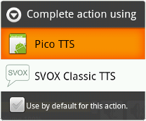
Select the one you have installed voice you want to use.
Read an article from FeedMe
To read an article from FeedMe follow these steps:
Install and configure FeedMe, you can download it here
Enter one of the feeds.

- Enter one of the items

- Push the icon in the upper right corner (three vertical dots).

- Select option Send Content to …
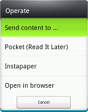
- Complete the action by selecting Audible TTS
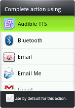
- If you want not to be asked again, ckeck before the option opción Use by default for this action. This option is reversible as the image shows.

Read an e-mail from K9-Mail
To read an e-mail from k9-Mail follow these steps:
- Install and configure K9-Mail, you can download it here
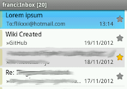
- Go to one of the e-mails

- Go to the menu
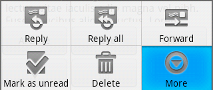
- Select option Share
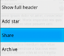
- Complete action selecting Audible TTS
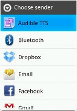
Read a text file
There are two ways to read a text file:
From outside while using a file browser.
From inside Audible TTS while using it.
Read a text file desde un Exploraror de Archivos
This operation is very straightforward, follow these steps:
Install a file browser if the device has no one out of the box, although this is not usual. You can install one of follows:
Launch the file browser by clicking on the icon.

- Click on the text file to read.
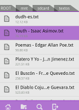
- Complete action selecting Audible TTS
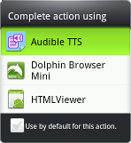
- If you want not to be asked again, ckeck before the option opción Use by default for this action. This option is reversible as the image shows.

Read a text file desde Audible TTS
This operation is as simple as above and also also need to install a file browser.
Install a file browser if it has no one out of the box. Go to the first step of the above operation to install it.
Activate Extra button to show hidden buttons.
- Push Load File button.
Settings
Category read
Lowercase lets you read text as lowercase. This allows some words that are read by the voice synthesizer as acronyms to be read properly. Its use is appropriate in some types of text and inappropriate in others.
Ignore lets you ignore some characters or character sequences.
Ignore title always ignores the title.
Ignore repeated title ignores the title when repeated at the begining of the first paragraph (recomended).
Ignore () ignore parentheses, suitable only for some types of text.
Ignore [] ignores brackets, suitable only for some types of text.
Ignore {} Ignores curly brackets, suitable only for some types of text.
Ignore | ignores the pipe character, suitable for most types of text.
Ignore _ ignores underscores or underlined, suitable for most types of text.
Ignore – ignores two or more hyphens, suitable for most types of text.
Ignore * ignores asterisks, suitable for most types of text.
Ignore & ignores andpersands, suitable for most types of text.
Category auto
Auto allows the application to perform some actions automatically.
Play allows the application to start reading automatically when it has been invoked by another application.
Exit allows the application to exit automatically when reading has finished.
Screen Lock allows the application to close automatically when reading has finished.
Category language
Detect read each sentence in the detected language (recommended).
Default language used when no language has been detected.
Available Languages languages allowed to be detected. The mor you allow the more it will take to load first time, second and the following will have no significative delay.
German/Deutsch allows to identify German language
English allows to identify English language
Spanish/Español allows to identify Spanish language
Spanish/Español (Country) allows to select the preferred country variant for Spanish:
- ES (Spain)
- MX (México)
- US (United States)
French/Français allows to identify French language.
French/Français (Country) allows to select the preferred country variant for French: FR (France), CA (Canadá).
Italian/Italiano allows to identify Italian language.
Dutch/Nederlands allows to identify Dutch language.
Portuguese/Português allows to identify Portuguese language.
Portuguese/Português (Country) allows to select the preferred country variant for Portuguese:
- BR (Brasil)
- PT (Portugal)
Turkish/Türkçe allows to identify Turkish language.
Russian/Русский allows to identify Russian language.
Arabic/العربي allows to identify Arabic language.
Korean/한국어 allows to identify Korean language.
Chinese/中文 allows to identify Chinese language.
Chinese/中文 (Country) allows to select the preferred country variant for Chinese:
- (CN) 中国
- (TW)台灣
- (HK) 香港
- (cmn) 普通话/Mandarin
- (yue) 粵語/Cantonese
Japanese/日本語 allows to identify Japanese language.
Gender not yet implemented.
Category user interface
Theme allow select three interface types: Light, Grey and Dark.
Font Family allows select font: Default, Sans Serif, Serif and Monospace.
Font Size allows select font size, between 12 and 32.
Bold Style whether font is bold.
Toasts allows non-blocking notifications that shows events that are happening.
Pregress Bar displays a progress bar while reading that shows: elapsed time, estimated remaining time and the estimated total time.
Volume shows volume controls.
Join Lines join lines of the same paragraph, so let you see more text in the screen.
Category optimization
Quick Start allows select time of inactivity to keep application in memory to speed application startup (recommended 1 day).
Dectect Early lets start reading just after a partial data charge for detecting language, avoiding the delay in reading the first time you run the application (recommended).
Category advanced (developers only)
- Early Save saves text passed to the application just beginning for retrieval just in case of error (developers only).
Category about
- About Audible goes to About Audible TTS screen.
Frequent Asked Questions
There would be more languages in the future? Yes, if you just want to recognize another language apart from the nine already included, just request it and send a link to install it’s voice. If you want the entire application translated to that language, you can contact me to help with translation. For both send e-mail to flikxxi@gmail.com.
Why it reads nothing? Verify that you have installed the voice synthesizer, and the voice for the language of the text you want to read.
Is there any version for other platforms? No, there is no plan to support any other platform that Android. Yes there are plans for GNU/Linux, Windows and MacOSX application to send texts to the device to be read.
What can I do in case of error? Go to section Troubleshooting.
What can I do if there is no text when I open the application? The text must be provided by other applications that can send content, manually edited or loaded using a text file.
My question is not in this list what I can do? You can send an e-mail to flikxxi@gmail.com, I will try to answer as soon as possible.
What’s New
0.5.0 vc7: adds Dutch, Portuguese, Turkish and Arabic.
0.4.1 vc5: continue reading after rotation, fix bugs y minor changes
0.4.0 vc5: improve rotation, ask for languages when detect languages is active, do not detect languages not enabled, minor bugs fixed and minor changes.
v0.3.0 vc4: added menu, rotation, help and minor changes.
v0.2.0 vc3: start reading from a file browser.
v0.0.2 vc2: optimized memory usage and improved memory errors handling.
v0.0.1 vc1: first version